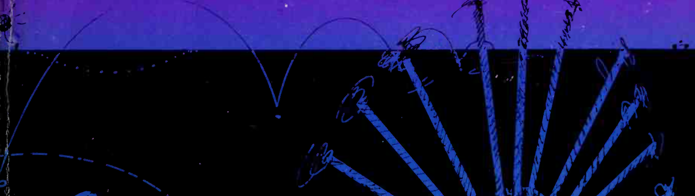

Week 6
3 Quotes
“These vehicles, you will say, are governed by INSTINCTS of various sorts and, ala, we just don't know how Nature manages to embody instincts into a piece of brain. ”
The author deconstructed a complex interactive physical device by analyzing the structure and sensor device of the vehicles. This research method can also be applied to people, which may be exactly what machine learning is doing now, by collecting a large amount of behavioral data, trying to interpret the preference that affects people's behavior.
“It does seem surprising that errors arising in the sloppy execution of a task should act as germs for improvement. What is less astonishing is the creative power of a special sort of error consisting of new combinations of partial mechanisms, each of which is not disrupted in its own well-tasted structure. ”
The errors and occasional mistakes empower the evolution of species and bring innovations and creativity. It reminds me of Detroit: Become human. Emotions and resistance of androids are considered to be imperfect and deviant should be exterminated.
“ We build very simple homogeneous networks and thendiscovered that they contain implicit definitions of such concepts as 3-dimensional space, continuous movenment, reality of objects, multitude of objects, and persobal relation.More and more we are losing our fear of philosophical concepts.”
It's quite amazing to understand such broad and abstruct ideas through critical making method, which is so physical and tangible. This also makes people think, what exactly is philosophy? Does it appear before facts, or is it a concept derived after activities appears?